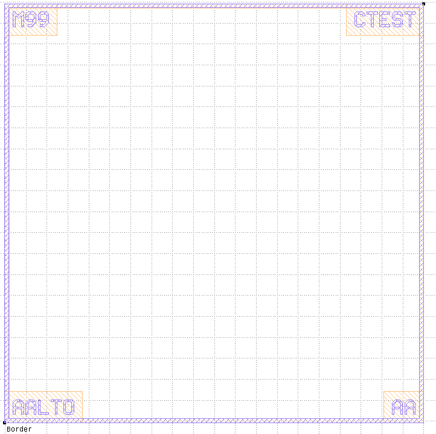
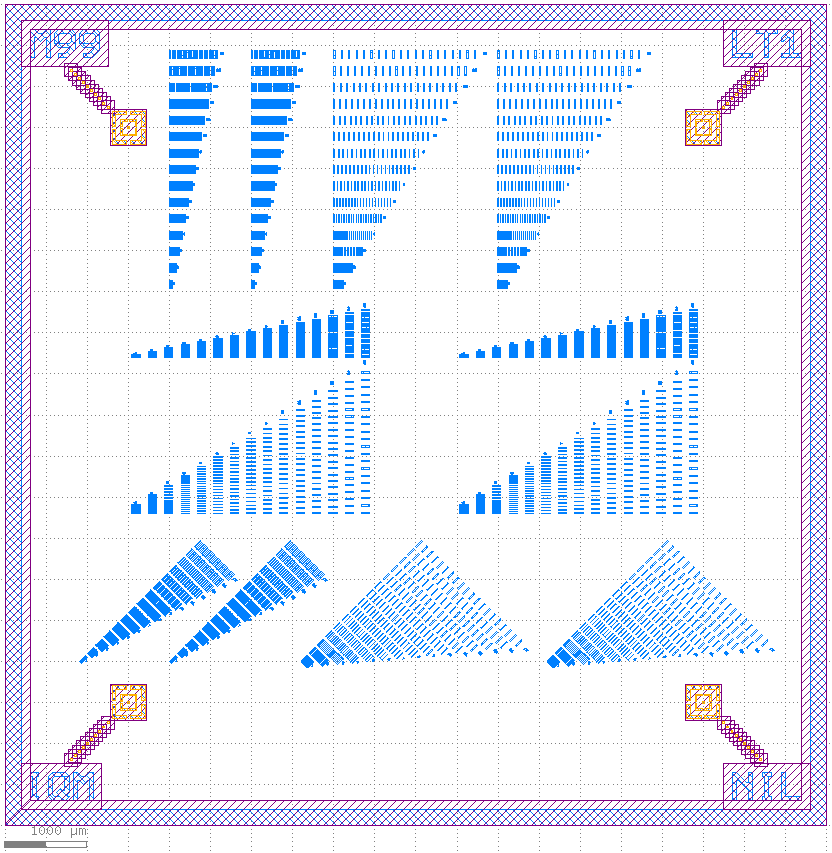

Chips¶
AirbridgeCrossings¶
PCell parameters:crossings (Int) - Number of pairs of airbridge crossings, default=
10b_number (Int) - Number of airbridges in one element of the mechanical test array, default=
5
AirbridgeDcTest¶
Chip full of airbridge 4-point dc tests.
PCell parameters:n_step (Int) - Increment step for number of airbridges, default=
1test_width (Double) - Width of a single test, default=
2000, unit=μm
Chip¶
Base class for all chips. Etching away the metal for dicing track, standard labels in the four corners.
PCell parameters:with_grid (Boolean) - Make ground plane grid, default=
Falsemerge_base_metal_gap (Boolean) - Merge grid and other gaps into base_metal_gap layer, default=
Falsea_capped (Double) - Width of center conductor in the capped region (μm), default=
10, unit=μmb_capped (Double) - Width of gap in the capped region , default=
10, unit=μmwith_gnd_tsvs (Boolean) - Make ground TSVs, default=
Falsetsv_grid_spacing (Double) - TSV grid distance (center to center), default=
300, unit=μmtsv_edge_to_tsv_edge_separation (Double) - Ground TSV clearance to manually placed TSVs (edge to edge), default=
250, unit=μmtsv_edge_to_nearest_element (Double) - Ground TSV clearance to other elements (edge to edge), default=
100, unit=μmedge_from_tsv (Double) - Ground TSV center clearance to chip edge, default=
550, unit=μmwith_face1_gnd_tsvs (Boolean) - Make ground TSVs on the top face, default=
Falsewith_gnd_bumps (Boolean) - Make ground bumps, default=
Falsebump_grid_spacing (Double) - Bump grid distance (center to center), default=
120, unit=μmbump_edge_to_bump_edge_separation (Double) - In bump clearance to manually placed Bumps (edge to edge), default=
95, unit=μmedge_from_bump (Double) - Spacing between bump and chip edge, default=
550, unit=μmframes_enabled (List) - List of face ids (integers) for which a ChipFrame is drawn, default=
[0]frames_marker_dist (List) - Marker distance from edge for each chip frame, default=
[1500, 1000], unit=[μm]frames_diagonal_squares (List) - Number of diagonal marker squares for each chip frame, default=
[10, 2]frames_mirrored (List) - List of booleans specifying if the frame is mirrored for each chip frame, default=
[False, True]face_boxes (Shape) - List of chip frame sizes (type DBox) for each face. None uses the chips box parameter., default=
[None, <klayout.dbcore.DBox object at 0x7fd74201eee0>]dice_width (Double) - Dicing width, default=
200, unit=μmdice_grid_margin (Double) - Margin of the ground grid avoidance layer for dicing edge, default=
100name_mask (String) - Name of the mask, default=
M99name_chip (String) - Name of the chip, default=
CTestname_copy (String) - Name of the copy, default=
Nonename_brand (String) - Name of the brand, default=
IQMmarker_types (List) - Marker type for each chip corner, clockwise starting from lower left, default=
['Marker Standard', 'Marker Standard', 'Marker Standard', 'Marker Standard', 'Marker Standard', 'Marker Standard', 'Marker Standard', 'Marker Standard']box (Shape) - Bounding box of the chip frame, default=
(0,0;10000,10000)connector_type (String) - Connector type, default=
Coax, choices=['Single', 'GSG', 'Coax']
Origin: Center of the cross.
DaisyWoven¶
PCell parameters:name_chip (String) - Name of the chip, default=
DCframes_enabled (List) - List of face ids (integers) for which a ChipFrame is drawn, default=
[0, 1]

Demo¶
PCell parameters:readout_res_lengths (List) - Readout resonator lengths, default=
[5000, 5100, 5200, 5300], unit=[μm]include_couplers (Boolean) - Include couplers between qubits, default=
Truename_chip (String) - Name of the chip, default=
Demo

JunctionTest¶
PCell parameters:edge_len (Int) - Length of square’s one edge, default=
80inter_space (Int) - Space in between the Squares, default=
20
JunctionTest2¶
PCell parameters:pad_width (Double) - Pad Width, default=
500, unit=μmjunctions_horizontal (Boolean) - Horizontal (True) or vertical (False) junctions, default=
Truepad_spacing (Double) - Spacing between different pad pairs, default=
200, unit=μmjunction_type (String) - Junction type, default=
SQUIDsmall_loop_area (Double) - Test SQUIDs small loop area, default=
80, unit=μmlarge_loop_area (Double) - Test SQUIDs large loop area, default=
130, unit=μmjunction_width_small (Double) - Test SQUIDs Junction finger width starting value (small loop), default=
0.15, unit=μmjunction_width_large (Double) - Test SQUIDs Junction finger width starting value (large loop), default=
0.08, unit=μmjunction_width_step_increment_small (Double) - Junction finger width step increment (small loop), default=
0.01, unit=μmjunction_width_step_increment_large (Double) - Junction finger width step increment (large loop), default=
0.03, unit=μmpads_loop (List) - Select large or small loop area for each central test pad, default=
['large', 'large', 'small', 'small', 'small', 'large']marker_types (List) - Marker type for each chip corner, clockwise starting from lower left, default=
['Marker Standard', 'Marker Standard', 'Marker Standard', 'Marker Standard']squid_type (String) - SQUID Type, default=
Manhattan, choices=['NoSquid', 'Manhattan', 'QCD1', 'Sim', 'SIM1']
LithographyTest¶
CrossingTwoface¶
Base class for CrossingTwoface chips. The left part of the chip has variable number of crossings between a transmission line on the horizontal direction and top-face transmission line on vertical direction. The right part of the circuit represents non-crossing transmission lines.
PCell parameters:crossings (Int) - Number of pairs of flip-chip crossings, default=
3crossing_length (Double) - Length of the crossing on the top face (μm), default=
400, unit=μmcross_talk_distance (Double) - Distance between the right straight transmission line and meander on the right (μm), default=
300, unit=μmmeander_face (String) - Meander face on right side, default=
single, choices=['Single', 'Two Face']frames_enabled (List) - List of face ids (integers) for which a ChipFrame is drawn, default=
[0, 1]

QualityFactorTwoface¶
Base class for QualityFactorTwoface chips. Preliminary design which is going to be changed.
PCell parameters:resonator_types (List) - Choices: ‘capped’, ‘twoface’, ‘etched’, ‘solid’, default=
['capped', 'capped', 'capped', 'capped', 'capped', 'capped']resonator_faces (List) - Resonator face order list, default=
[0, 1]connector_distances (List) - Distances of face to face connectors from resonator inputs, default=
[500, 1300, 2100, 2900, 3700, 4500], unit=[μm]spiral_box_height (Double) - Spiral resonator box height, default=
2000spiral_box_width (Double) - Spiral resonator box width, default=
500x_indentation (Double) - Resonator/connector indentation from side edges, default=
800cap_res_distance (Double) - Distance between spiral resonator and capacitor, default=
200waveguide_indentation (Double) - Waveguide indentation from top chip edge, default=
500extra_resonator_avoidance (List) - Added avoidance around resonators [μm], default=
[0, 0, 0, 0, 0, 0], unit=[μm]bridge_spacing (Double) - Airbridge spacing, default=
0, unit=μmframes_enabled (List) - List of face ids (integers) for which a ChipFrame is drawn, default=
[0, 1]res_lengths (List) - Physical length of resonators [μm], default=
[5434, 5429, 5374, 5412, 5493, 5589], unit=[μm]n_fingers (List) - Fingers in planar capacitors, default=
[4, 4, 2, 4, 4, 4]l_fingers (List) - Length of the capacitor fingers [μm], default=
[23.1, 9.9, 14.1, 10, 21, 28], unit=[μm]type_coupler (List) - Coupler types, default=
['interdigital', 'interdigital', 'interdigital', 'gap', 'gap', 'gap']res_a (List) - Width of the center conductor in the resonators [μm], default=
[10, 10, 10, 20, 10, 5], unit=[μm]res_b (List) - Width of the gap in the resonators [μm], default=
[6, 6, 6, 12, 6, 3], unit=[μm]

QualityFactor¶
PCell parameters:res_lengths (List) - Physical length of resonators [μm], default=
[5434, 5429, 5374, 5412, 5493, 5589], unit=[μm]n_fingers (List) - Fingers in planar capacitors, default=
[4, 4, 2, 4, 4, 4]l_fingers (List) - Length of the capacitor fingers [μm], default=
[23.1, 9.9, 14.1, 10, 21, 28], unit=[μm]type_coupler (List) - Coupler types, default=
['interdigital', 'interdigital', 'interdigital', 'gap', 'gap', 'gap']n_ab (List) - Number of resonator airbridges, default=
[5, 0, 5, 5, 5, 5]res_term (List) - Resonator termination type, default=
['galvanic', 'galvanic', 'galvanic', 'airbridge', 'airbridge', 'airbridge']res_beg (List) - Resonator beginning type, default=
['galvanic', 'galvanic', 'galvanic', 'airbridge', 'airbridge', 'airbridge']res_a (List) - Width of the center conductor in the resonators [μm], default=
[5, 10, 20, 5, 10, 20], unit=[μm]res_b (List) - Width of the gap in the resonators [μm], default=
[3, 6, 12, 3, 6, 12], unit=[μm]tl_airbridges (Boolean) - Airbridges on transmission line, default=
Truelauncher_top_dist (Double) - Launcher distance from top, default=
2800, unit=μmlauncher_indent (Double) - Launcher indentation from edge, default=
800, unit=μmmarker_safety (Double) - Distance between launcher and first curve, default=
1000, unit=μmresonators_both_sides (Boolean) - Place resonators on both sides of feedline, default=
Falsemax_res_len (Double) - Resonators exceeding this length become meandering, default=
1e+30, unit=μmbox (Shape) - Border, default=
(0,0;10000,10000)
SingleXmons¶
The SingleXmons chip has 6 qubits, which are coupled by readout resonators to the same feedline. The feedline crosses the center of the chip horizontally. Half of the qubits are above the feedline and half are below it. For each qubit, there is a chargeline connected to a launcher, but no fluxline. There can optionally be four test resonators between the qubits.
PCell parameters:readout_res_lengths (List) - Readout resonator lengths (six resonators), default=
[5000, 5100, 5200, 5300, 5400, 5500]use_test_resonators (Boolean) - Use test resonators, default=
Truetest_res_lengths (List) - Test resonator lengths (four resonators), default=
[5200, 5400, 5600, 5800]n_fingers (List) - Number of fingers for test resonator couplers, default=
[4, 4, 2, 4]l_fingers (List) - Length of fingers for test resonator couplers, default=
[23.1, 9.9, 14.1, 10, 21]type_coupler (List) - Coupler type for test resonator couplers, default=
['interdigital', 'interdigital', 'interdigital', 'gap']squid_type (String) - SQUID Type, default=
Manhattan, choices=['NoSquid', 'Manhattan', 'QCD1', 'Sim', 'SIM1']
Stripes¶
PCell parameters:edge_len (Int) - Length of square’s one edge, default=
80inter_space (Int) - Space in between the Squares, default=
20axis (String) - The axis of the stripes, default=
Vertical
XmonsDirectCoupling¶
PCell parameters:qubit_spacing (Double) - Qubit spacing, default=
10, unit=μmarm_width_a (Double) - Qubit 1 and 3 arm width, default=
24, unit=μmarm_width_b (Double) - Qubit 2 arm width, default=
24, unit=μmrr_cpl_width (List) - RR to QB coupler width (um for each RR), default=
[24, 24, 24]squid_type (String) - SQUID Type, default=
Manhattan, choices=['NoSquid', 'Manhattan', 'QCD1', 'Sim', 'SIM1']fluxline_type (String) - Fluxline Type, default=
Fluxline Standard, choices=['none', 'Fluxline Standard', 'Fluxline Straight']